Биометрия
Face ID, контроль доступа, верификация
компьютерное зрение
Разберём путь от одного пикселя до уверенного ответа нейросети — и соберём первую модель, которая распознаёт рукописные цифры.
01 · определение
Компьютерное зрение — область искусственного интеллекта, которая учится извлекать смысл из изображений и видео: находить объекты, понимать сцены и принимать решения.
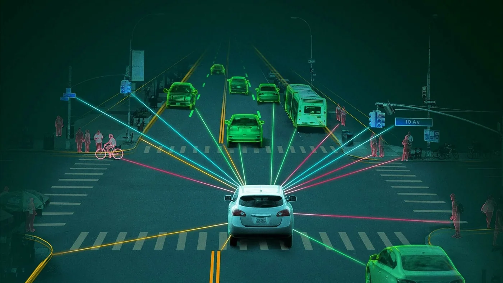
02 · задачи
Чем сложнее ответ, тем больше информации должна вернуть модель.
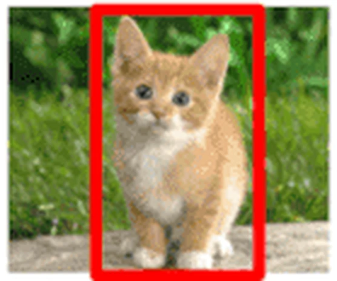
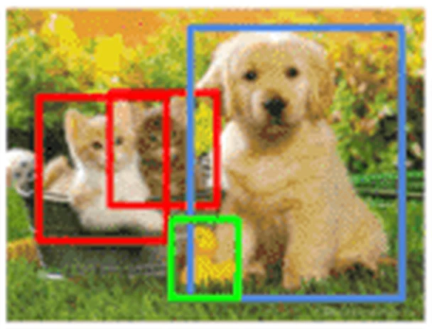
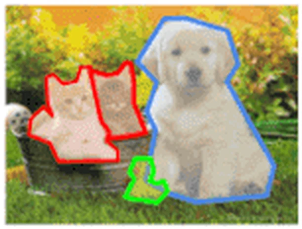
Модель отвечает одним словом: «кошка». Этого достаточно, если объект один и занимает почти весь кадр.
03 · применение
Один и тот же принцип — признаки → модель → решение — лежит в основе очень разных продуктов.
Face ID, контроль доступа, верификация
Навигация и объезд препятствий
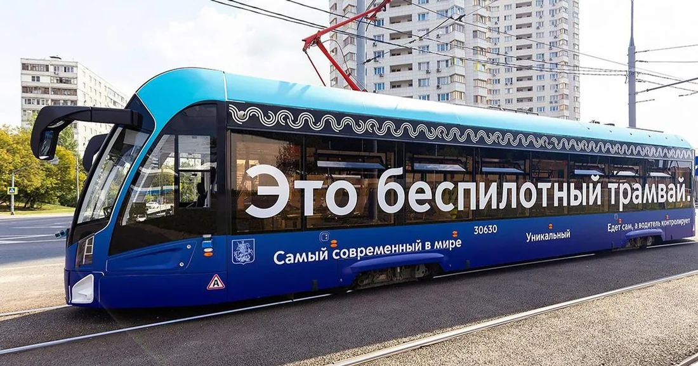
03Дорога, знаки, пешеходы
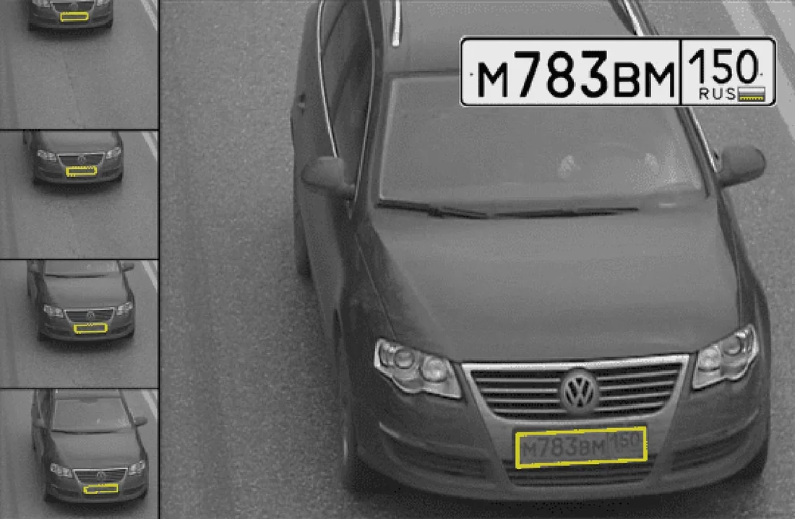
04Парковки и контроль трафика
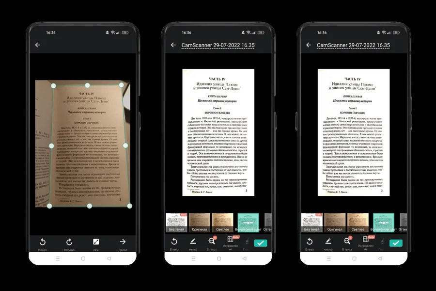
05Сканы, перевод, извлечение данных
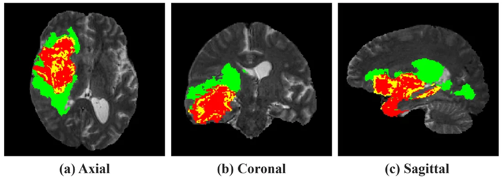
06МРТ, КТ, поиск аномалий
ещё: видеоаналитика · дефектоскопия · сельское хозяйство · ритейл · робототехника
04 · признаки
Слой за слоем изображение превращается из набора яркостей в компактное описание объекта.
784 значения яркости
свёртка ищет признаки на изображении
дуги, петли, штрихи
Уверенность модели в классе «3».
каждый следующий слой отвечает за всё более абстрактный признак →
05 · нейрон
Нажмите на входы, чтобы увидеть, как меняется ответ.
Веса 0.9 · 0.4 · 0.7 и смещение −0.2 — это параметры, которые сеть подбирает при обучении.
06 · активация
Сколько слоёв ни добавь, сеть останется одной большой линейной формулой.
Сжимает любое число в диапазон 0…1. Удобно, когда нужна вероятность.
max(0, z): отрицательные значения становятся нулём. Простая и быстрая — стандарт для свёрточных сетей.
07 · обучение
Модель не программируют правилами. Её тренируют на примерах.
Изображение проходит через слои, на выходе — 10 вероятностей.
Сравниваем ответ с правильной меткой. Ошибка — одно число.
Градиент показывает, как изменить каждый вес, чтобы ошибка стала меньше.
Оптимизатор Adam чуть-чуть меняет веса. И всё повторяется.
08 · цвет
Для компьютера нет «красивого заката». Есть высота, ширина и три канала: красный, зелёный, синий. Каждый пиксель каждого канала — число от 0 до 255.
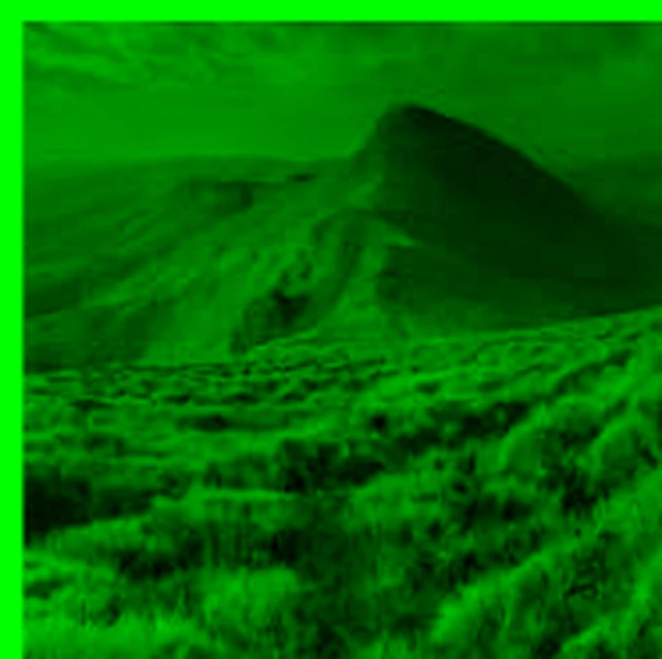
G · c=2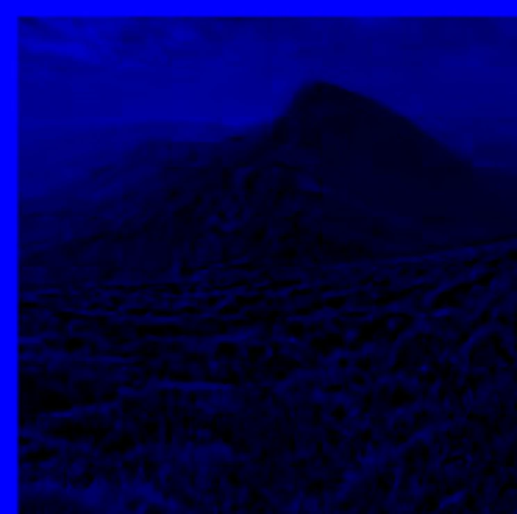
B · c=3в памяти: не «картинка», а массив чисел → свёртка работает с каждым каналом
09 · ч/б
Наведите на пиксель: значение можно прочитать.
Каждый пиксель — яркость от 0 до 255.
Один канал вместо трёх — в 3 раза меньше данных.
Перед обучением приводим значения к диапазону 0…1.
10 · данные
База Национального института стандартов и технологий США. Уже разбита на обучающую и тестовую выборки, потому что модель не должна видеть тест во время обучения.
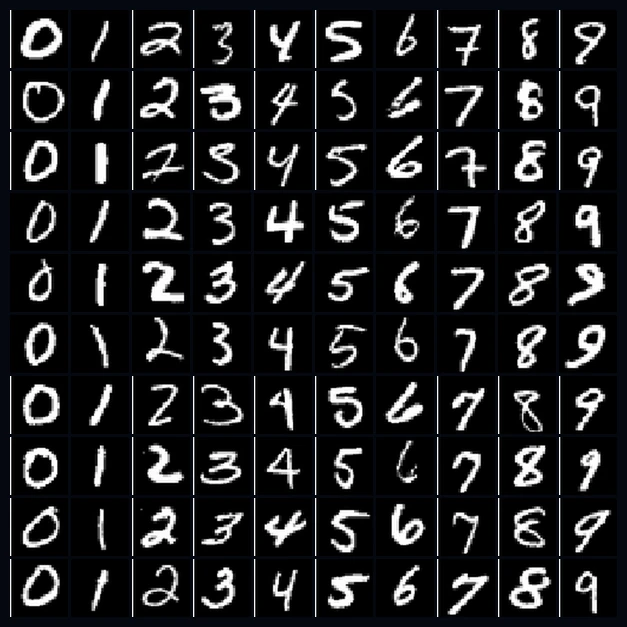
11 · архитектура
Чередуем свёртки и pooling, затем сглаживаем признаки и классифицируем.
Dropout случайно «выключает» часть нейронов — это защищает сеть от переобучения.
12 · свёртка
Каждое положение окна даёт одно число в карте признаков.
13 · сжатие
Окно 2×2 выбирает максимум. Карта признаков уменьшается в 4 раза, но самые яркие отклики остаются.
ReLU обнуляет отрицательные отклики — в pooling попадают только полезные признаки.
14 · вероятности
Сеть не говорит «это точно 3». Она говорит, насколько уверена в каждом из 10 классов. Сумма вероятностей всегда равна 1.
Logits — «сырые» выходы последнего слоя. Softmax делает из них распределение.
15 · результат
Точность на данных, которые модель никогда не видела при обучении.
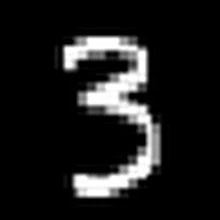
3 → 3✓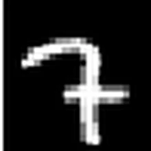
7 → 7✓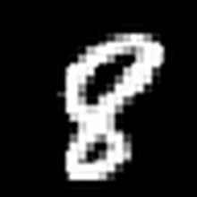
8 → 8✓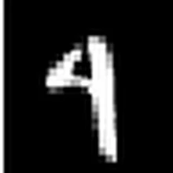
4 → 4✓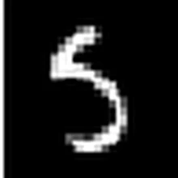
5 → 6×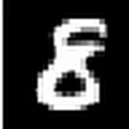
8 → 8✓16 · практика
Рисуйте мышью или пальцем. Мы сразу превратим рисунок в матрицу 28×28.
Демо сравнивает рисунок с 10 шаблонами MNIST. Настоящая CNN выучивает признаки сама — как в ноутбуке.
17 · ноутбук
Теория закончилась. Открываем ноутбук и собираем модель руками.
Откройте ноутбук по кнопке ниже, включите GPU и выполните ячейки по порядку.
from tensorflow.keras.datasets import mnist
(X_train, y_train), (X_test, y_test) = mnist.load_data()
X_train = X_train.astype("float32") / 255.0
X_test = X_test.astype("float32") / 255.0model = Sequential([
Conv2D(32, (3,3), activation="relu",
input_shape=(28,28,1)),
MaxPooling2D((2,2)),
Conv2D(64, (3,3), activation="relu"),
MaxPooling2D((2,2)),
Flatten(), Dense(128, activation="relu"),
Dense(10, activation="softmax")
])model.compile(loss="categorical_crossentropy",
optimizer="adam", metrics=["accuracy"])
history = model.fit(X_train, Y_train,
epochs=10, batch_size=128,
validation_split=0.1)test_loss, test_acc = model.evaluate(X_test, Y_test)
# accuracy ≈ 0.991, loss ≈ 0.02918 · задачи
Отмечайте выполненные шаги. Главное — не просто запустить код, а объяснить результат.
19 · проверка
Выберите ответ — сразу увидите объяснение. В конце — самопроверка.
Выберите ответ в каждом вопросе.
20 · самопроверка
Отметьте то, что можете объяснить своими словами.
Пройдите пять вопросов — здесь появится результат.
21 · итог
Пять идей, которые стоит забрать с мастер-класса.
Для сети картинка — матрица чисел. Чёрно-белая цифра 28×28 — это 784 значения, цветная — уже три матрицы.
Края, штрихи и формы не программируют вручную: свёрточные слои находят их сами в процессе обучения.
Ядро скользит по изображению и ищет локальный признак, а pooling оставляет самые сильные признаки и уменьшает размер.
Softmax превращает десять чисел в распределение вероятностей. Сумма всегда равна единице.
99% — это не 100%. Проверяйте модель на тесте, смотрите на неверные примеры и следите за переобучением.
Если остались вопросы, загуглите)))
навигация
управление